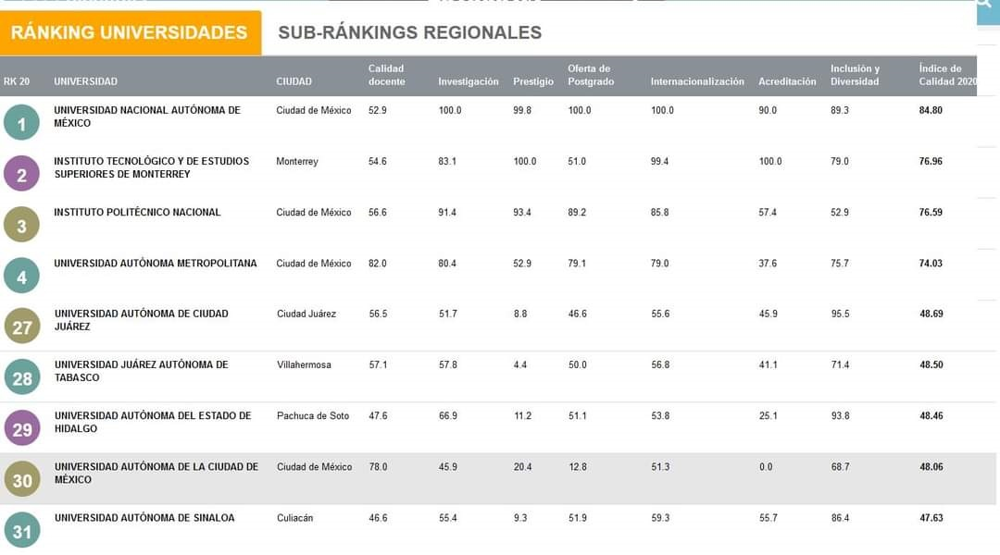

Ranking de las Mejores Universidades de México
Conozca cuáles son las mejores universidades de México. Estos son los resultados del ranking de Universidades de México 2020 elaborado por la revista AméricaEconomía.
La Universidad Nacional Autónoma de México, imbatible. Los “Pumas” alcanzan los máximos puntajes en Investigación, Oferta de Posgrados e Internacionalización, con lo que nuevamente se ubican primeros en la edición 2020 del ranking.
Los escoltas, el Tec. de Monterrey (2º) y el Instituto Politécnico Nacional (3º), palmo a palmo. En esta versión del ranking solo los separan 0.4 pts. La institución regiomontana se impone por sobre el resto en Acreditación y Prestigio, y aunque el IPN no obtiene el primer lugar en ninguna de las dimensiones, da dura pelea. En Investigación, por ejemplo, se adjudica el segundo lugar de la dimensión, y en el indicador de Productividad ISI aparece como la mejor institución de las 50 rankeadas, con 1.38 papers por investigador.
La Universidad Autónoma Metropolitana, la más seria contendiente. Su cuarta posición en el listado general refleja el equilibrio de su proyecto educativo a lo largo de las siete dimensiones evaluadas, motivo por el cual no es sorpresa que se ubique dentro de los primeros cinco lugares en la mayoría de los indicadores. Este año hace suyo el cuarto lugar en Calidad Docente, y en el indicador de Formación del plantel docente destaca, con el 47.8%, como la tercera universidad con la mejor proporción de profesores con doctorado dentro del claustro.
Estas mismas cuatro instituciones de educación superior (IES) han aparecido en las primeras posiciones del ranking desde su primera versión en 2012 y, salvo un enroque entre el IPN y el Tec en 2014, han conservado el mismo orden.

El top 5 de esta edición del ranking lo completa El Colegio de México. Esta institución sube dos puestos en el ranking general, repitiendo su mejor ubicación alcanzada en la versión 2015, de la mano de sus excepcionales resultados en la dimensión Calidad Docente, donde son los indiscutidos líderes. Y así lo refleja el hecho de que el 76.9% del total de sus profesores cuenta con doctorado como mejor grado académico alcanzado, el 100% de sus profesores están contratados a tiempo completo y son acreedores del increíble ratio de 0.5 estudiantes de licenciatura por docente o, lo que es lo mismo, cuentan con 2 profesores disponibles por cada estudiante.
La dimensión Calidad Docente, que es la que más peso tiene en el ranking, tiene además una particularidad interesante: los primeros lugares no pertenecen, salvo la UAM, a las tres primeras IES del ranking general. Las luces en este aspecto se las llevan otras universidades, todas ellas, eso si, dentro de las 10 mejores en el listado general. Así, la UDLAP (7º) repite por tercer año consecutivo el segundo lugar en esta dimensión: 69.3% de profesores con doctorado y 53.9% de profesores a tiempo completo son algunas de sus credenciales. El podio lo completa la Universidad Autónoma Chapingo (9º), que en 2017 fue segunda en esta dimensión y desde 2018 viene siendo tercera, que destaca con un notable 93.6% de profesores a tiempo completo.
Y un poco más abajo en el listado de Calidad Docente aparecen otras universidades que, sin pertenecer al grupo de avanzada en el ranking general, se distinguen por una alta proporción de profesores full time, como la U. Autónoma Agraria Antonio Narro (17º), que tiene un 94,9% de profesores contratados en esta condición, la U. Autónoma de la Ciudad de México (30º) , que hace lo propio con un 97.7%, y la U. Pedagógica Nacional (42º), que presenta un 88% de profesores tiempo completo. Como resultado, estas tres universidades se ubican, respectivamente, en el 5º, 6º y 7º puesto de la dimensión.
Ranking CDMX
| Las 10 mejores |
| R. CDMX | R. NAC. | COLEGIO | MEJOR ATRIBUTO |
| 1 | 1 | UNAM | INVESTIGACION |
| 2 | 3 | IPN | PRESTIGIO |
| 3 | 4 | UAM | >CALIDAD DOCENTE |
| 4 | 5 | COLMEX | CALIDAD DOCENTE |
| 5 | 10 | UNIV. IBERO | INCLUSION Y DIV |
| 6 | 18 | INST TEC AUT DE CDMX | INTERNACIONALIZACION |
| 7 | 30 | UACM | CALIDAD DOCENTE |
| 8 | 32 | PANAMERICANA | INTERNACIONALIZACION |
| 9 | 42 | U PEDAGOGICA N | CALIDAD DOCENTE |
| 10 | 48 | UVM | INCLUSION Y DIV |
¿Cómo se realiza el Ranking de las Mejores Universidades de México?
Calidad Docente (30%): Evalúa el cuerpo docente conforme la cantidad bruta de profesores según jornada académica (10%), y la relación de estos sobre la cantidad de matriculados en Licenciatura (10%); la distribución del total del profesorado (25%) considerando las Siguientes variables: tiempo completo, tres cuartos, medio tiempo y hora. Además evalúa la formación del mismo cuerpo docente (55%), conforme Si son: académicos doctorados, magíster, licenciados y técnicos.
Investigación (20%): Mide la cantidad de patentes (30%) según la relación entre patentes solicitadas, patentes otorgadas y una “Tasa de éxito"; la producción anual absoluta de paper ISI (15%), la productividad anual de paper ISI por cada investigador SNI (30%), y la calidad de los investigadores de acuerdo a su nivel alcanzado, conforme la categoría del SNI-CONACYT (25 por ciento).
Prestigio (15%): Se evalúa conforme encuestas online aplicadas a la base de lectores del diario El Economista y de AméricaEconomía durante enero-febrero de 2020.
Internacionalización (15%): Se construye mediante dos ejes: considerando las apariciones en diversos rankings internacionales de universidades, complementados por un indicador de percepción en base a la encuesta antes mencionada, conforme a sus preguntas sobre globalización y prestigio latinoamericano (60%). El segundo eje (40%) corresponde a la información reportada por las universidades respecto a convenios de doble titulación, intercambio de profesores con universidades extranjeras, intercambio de estudiantes con universidades extranjeras y la razón entre los montos asignados para estudiantes que deseen hacer intercambio en el extranjero y la cantidad de alumnos beneficiados.
Oferta de posgrado (10%): Considera la clasificación, para maestrías y doctorados, del Programa Nacional de Posgrados de Calidad (PNPC) de CONACYT (80%), conforme si son: de competencia internacional, en desarrollo, consolidados y recién creados. El 20% restante evalúa el total de programas de posgrado, tanto de doctorado, como de magíster, e independientemente de si están acreditados o no.
Acreditación (5%): Mide la cantidad bruta (40%) de programas académicos de pregrado que se encuentran acreditados ante el Consejo para la Acreditación de la Educación Superior (COPAES) y la proporción de estos (60%) en relación al total de programas de pregrado ofrecidos.
Inclusión y Diversidad (5%): El eje Diversidad toma la razón de estudiantes mujeres, indígenas, afromexicanos y con algún tipo de discapacidad sobre el total de alumnos de licenciatura, especialidad, maestría y doctorado (25%), la paridad de género entre profesores y altos cargos administrativos (25%). El eje Inclusión considera la relación entre el monto asignado para becas y la cantidad de estudiantes beneficiados (15%), la implementación de algún programa propio de ayuda para estudiantes indígenas (10%), la implementación de algún Sistema propio de financiamiento para los costos totales de estudios (5%), y las facilidades en términos de infraestructura y materiales para personas no videntes (10%) y para personas con discapacidad física o movilidad reducida (10 por ciento).
Se emplearon como fuentes los últimos datos disponibles a enero de 2020 de Execum-UNAM, CONACYT-PNPC, CONACYT-SNI, COPAES y de distintos rankings internacionales, además de información reportada por 40 universidades correspondiente al período académico 2018-2019.
Con información de :
El Economista